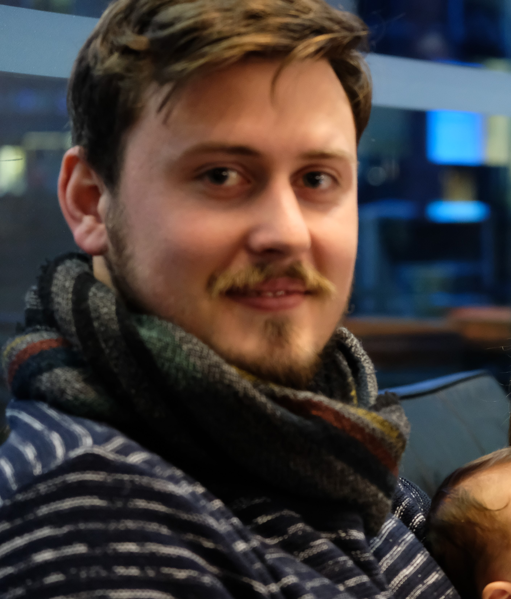

Bruno Frylinck

Summary
My professional background in hospitality, working as a Barista and Receptionist, has equipped me with valuable
skills essential for transitioning into a web development role:
- Attention to Detail: Ensuring quality in food and beverage service translates to a keen eye for clean,
efficient, and error-free code in web development.
- Customer Service Focus: Understanding diverse customer needs and providing prompt solutions aligns
perfectly with creating user-centric web solutions.
- Adaptability and Problem-Solving: Managing diverse tasks and addressing customer requirements
demonstrates strengths applicable to troubleshooting and finding solutions in web development.
- Collaboration and Teamwork: Effective teamwork in the hospitality industry directly relates
to working efficiently within web development teams.
My educational background, particularly my current studies in Computer Science, highlights my commitment
to continuous learning and the technical aspects of web development.
My pursuit of a challenging role in a collaborative team environment resonates with my interest in web development.
The passion I have for delivering exceptional customer experiences can seamlessly transition into crafting remarkable
digital experiences for users through web development.
Skills in organization, communication, and multilingual abilities bring a unique perspective and adaptability,
valuable in a field that transcends geographical boundaries.
In essence, my background showcases adaptability, a customer-focused approach, teamwork, and an unwavering enthusiasm
for continuous learning – all assets crucial for a successful transition into a web development career.
Education
- High School Diploma from Curro Aurora Private School, Johannesburg, SA (2011 - 2013)
- Oil Technical Accreditation from Oil Insurance Limited, London, UK (2016 - 2017)
- IF1 & 2 Insurance Business from Chartered Insurance Institute, London, UK (2015 - 2016)
- Currently pursuing studies in Computer Science at the University of London, United Kingdom
Work Experience
- Barista at The Lamb Inn, Norwich, UK (2015 - 2019)
- Receptionist and Waiter at The Kings Head Hotel & Restaurant, Holt, UK (2014 - 2015)
- Pizza Chef at La Tavola, Murcia, Spain (2020 - 2023)
- Stock Controller at MediaMarkt, Spain (2023 - present)
Skills
- Multilingual (English, French, Spanish)
- Organization
- Problem-Solving
- Technical Skills (related to your studies in Computer Science)
- Attention to Detail
Other